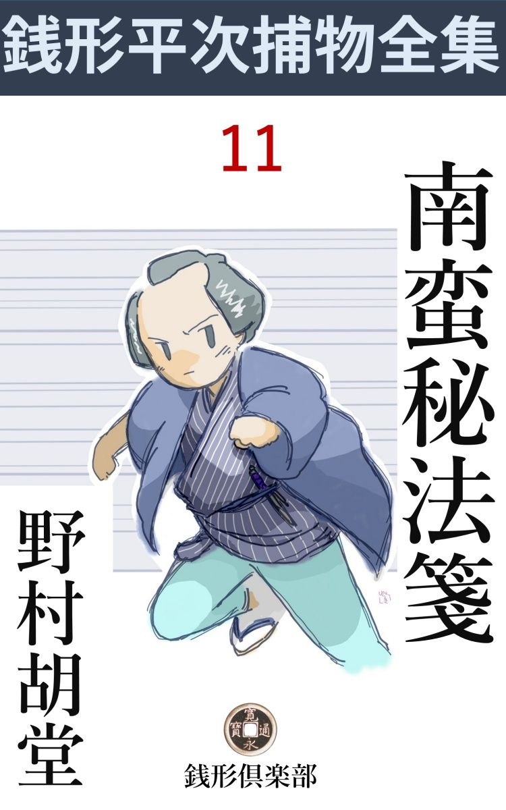
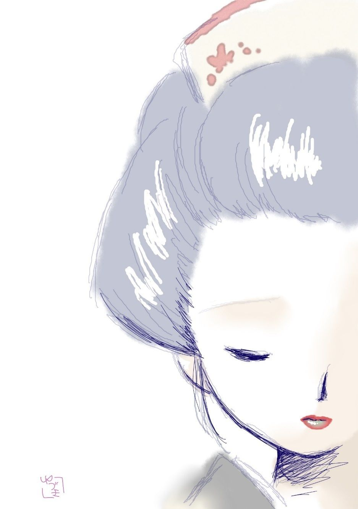

| 南蛮秘法箋: 銭形平次捕物全集第11話 (銭形倶楽部) | |
| 野村胡堂 | |
| ZENIGATA CLUB (2018) | |

一
小石川水道端に、質屋渡世で二万両の大身代を築 き上げた田代屋又左衛門、年は取っているが、昔は二本差だったそうで恐ろしいきかん気。
「やいやいこんな湯へ入られると思うか。風邪を引くじゃないか、馬鹿馬鹿しい」
風呂場から町内中響き渡るように怒鳴 っております。
「ハイ、唯今、すぐ参ります」
女中も庭男もいなかったと見えて、奥から飛出したのは伜の嫁のお冬、外から油障子を開けて、手頃の薪 を二三本投げ込みましたが、頑固な鉄砲風呂で、急にはうまく燃えつかない上、煙突などという器用なものがありませんから、忽ち風呂場一杯に漲 る煙です。
「あッ、これはたまらぬ。エヘンエヘンエヘン、そこを開けて貰おう。エヘンエヘンエヘン、寒いのは我慢するが、年寄に煙は大禁物だ」
「どうしましょう、ちょっと、お待ち下さい。燃え草を持って参りますから」
若い嫁は、風呂場の障子を一パイに開けたまま、面喰らって物置の方へ飛んで行ってしまいました。
底冷のする梅二月、宵と言っても身を切られるような風が又左衛門の裸身を吹きますが、すっかり煙に咽 せ入った又左衛門は、流しに踞 まったまま、大汗を掻いて咳入 っております。
その時でした。
どこからともかく飛んで来た一本の吹矢、咳き込むはずみに、少し前屈みになった又左衛門の二の腕へ深々と突っ立ったのです。
「あッ」
心得のない人ではありませんが、全く闇の礫 です。思わず悲鳴をあげると、
「どうしたどうした、大旦那の声のようだが」
店からも奥からも、一ぺんに風呂場に雪崩 込みます。
見ると、裸体のまま、流しに突っ起った主人又佐衛門の左の腕に、白々と立ったのは、羽ごと六寸もあろうと思う一本の吹矢、引抜くと油で痛めた竹の根は、鋼鉄の如く光って、美 濃 紙 を巻いた羽を染めたのは、斑々 たる血潮です。
「俺は構わねえ、外を見ろ、誰が一体こんな事をしやあがった」
豪気な又佐衛門に励まされるともなく、二三人バラバラと外へ飛出すと、庭先に呆然立っているのは、埃 除 けの手拭を吹流しに冠って、燃え草の木片を抱えた嫁のお冬、美しい顔を硬張らせて、宵闇の中にどこともなく見詰めております。
「御新造様、どうなさいました」
「あ、誰かあっちへ逃げて行ったよ。追っ駆けて御覧」
と言いますが、庭にも、木戸にも、往来にも人影らしいものは見当たりません。
「こんな物が落ちています」
丁稚の三吉がお冬の足元から拾いあげたのは、四尺あまりの本式の吹 矢 筒 、竹の節を抜いて狂いを止めた上に、磨きをかけたものですが、鉄砲の不自由な時代には、これでも立派な飛び道具で、江戸の初期には武士もたしなんだと言われる位、後には子供の玩具 や町人の遊び道具になりましたが、この時分はまだまだ、吹矢も相当に幅を利かせた頃です。
余事はさておき------、
引抜いたあとは、つまらない瘡 薬 か何かを塗って、その儘にして置きましたが、その晩から大熱を発して、枕も上がらぬ騒ぎ、暁方かけて又佐衛門の腕は樽のように腫 れ上がってしまいました。
麹町から名高い外科を呼んで診てもらうと、
「これは大変だ。しかし破傷風 にしてもこんなに早く毒が廻る筈はない------吹矢を拝見」
仔細らしく坊主頭を振ります。
昨夜の吹矢を、後で詮索 をする積りで、ほんの暫く風呂場の棚の上へ置いたのを、誰の仕業か知りませんが、瞬くうちになくなってしまったのです。
「誰だ、吹矢を捨てたのは」
と言ったところで、もう後の祭り、故意か過ちか、兎に角、又佐衛門に大怪我をさした当人が、後の祟 りを恐れて隠してしまったことだけは確かです。
「それは惜しいことをした。ことによると、その吹矢の根に、毒が塗ってあったかも知れぬて」
「え、そんな事があるでしょうか」
又佐衛門の伜又次郎、これは次男に生れて家督 を相続した手堅い一方の若者、今では田代屋の用心棒と言っていい程の男です。
「そうでもなければ、こんなに膨 れるわけがない。この毒が胴に廻っては、お気の毒だが命がむずかしい。今のうちに、腕を切り落す外はあるまいと思うが、如何でしょうな」
こう言われると、又次郎はすっかり蒼くなりましたが、父の又佐衛門は武士の出というだけあって思いの外驚きません。
「それは何でもないことだ。右の腕一本あれば不自由はしない、サア」
千貫目の錘 を掛けられたような腕を差出して、苦痛に歪 む頬に、我慢の微笑を浮べます。
二
「ネ、親分、右の通りだ。田代屋の若旦那が銭形の親分にお願いして、親父の片腕を無くさせた相手を取っちめて下さいって、拝むように言いましたぜ」
「多寡 が子供の玩具の吹矢なら、洗い立てして、反って気の毒なことになりはしないか」
銭形の平次は、容易に動く様子もありません。
「吹矢は子供の玩具でも、毒を塗るような手数なことをしたのは大人 でしょう」
「それは解るもんか」
「その上、吹矢筒の吹口には、女の口紅が付いていたって言いますぜ」
「何だと、八」
「それお出でなすった。この一件を打明けさえすりゃ、親分が乗り出すに決ってると思ったんだ」
ガラッ八はすっかり悦に入って内懐から出した掌 で、ポンと額を叩きます。
「八、そりゃ本当か。無駄を言わずに、正味のところだけ話せ」
「正味もおまけもねえ。吹矢筒の吹口に、こってり口紅が付いているんだ。その上、吹矢が飛んで来た時、外にいたのは嫁のお冬だけ。疑いは真一文字に恋女房へ掛って行くから、又次郎にしては気が気じゃねえ」
「フム」
「銭形の親分にお願いして、何とかお冬の濡 れ衣 が干してやりてえ、あの女は、そんな大それたことの出来る女じゃねえ------って言いますぜ」
「誰しも手前の恋女房を悪党とは思いたくなかろう。ところでガラッ八、その吹矢は一体誰のだえ」
「それが可笑 しいんで------」
「何が？」
「親分も知っていなさるだろうが、田代屋の総領というのはあの水道端の又五郎って、親仁にも弟にも似ぬ、恐ろしい道楽者だ」
「そうか、あの水道端の又五郎は、田代屋の伜か」
「それですよ親分、十年も前に勘当されて、暫く街 道 筋 をごろついていましたが、一年ばかり前、芸 妓 上 りのお半という女房と、取って八つになる、留吉という伜を伴れて帰って来て、図々しくも、田代屋のツイ隣に世帯を持ったものだ」
「フフ、話は面白そうだな」
「呆れた野郎で、世間では、田代屋の身上 に未練があって、古巣を見張りかたがた戻って来たに違げえねえって言いますぜ」
「そんな事もあるだろうな」
「吹矢はその小伜の留吉のだから面白いでしょう」
「何だと、八、なぜ早くそう言わねえ」
「ヘッ、ヘッ。話をこう運んで来なくちゃ、親分が動き出さねえ」
「馬鹿野郎、掛引なんかしやがって」
そう言いながらも平次は、短かい羽織を引っ掛けて、ガラッ八を追っ立てるように、水道端に向いました。
先は多寡 が質屋渡世の田代屋ですが、二万両の大身代の上、仔細あって公儀からお声の掛った家柄、まさか着流しで出かけるわけにも行かなかったのです。
三
向うへ行って見ると、待ってましたと言わぬばかり。
「銭形の親分、よくお出で下さいました」
若主人、又次郎は、足袋 跣足 のままで、店口から飛出し、庭木戸を開けて、奥へ案内してくれます。
「親分、これは若旦那の又次郎さんで------」
ガラッ八が取なし顔に言うと
「有難う御座いました。滅多に人を縛らないという銭形の親分がお出で下すったんで、どんなに心強いかわかりません。親仁 は昔気質で、腕一本は惜しくないが、家の中の取締りがつかないから、縄付を出しても仕方がない、吹矢を飛ばした女を突き出せ------とこう申します。吹矢を飛ばした奴と言わずに女と言うのは、家内の冬に当てつけた言葉で、私共夫婦は途方に暮れてしまいました。出来ることなら親仁の迷いを晴らして、家内を助けてやって下さいまし」
山の手の広い構 、土蔵と店の間を抜けて、母屋 へ廻る道々、又次郎は泣き出さんばかりの様子で、こう囁きます。
やがて奥へ通って、大主人の又佐衛門に引合されましたが、これは思いの外元気で、床の上に起直って平次とガラッ八を迎えました。
「銭形の親分だそうで、よくお出で下さいました」
「飛んだ災難で御座いましたな、どんな様子で？」
「なアに腕の一本位に驚く私じゃないが、やり口が如何にも憎い。刀か槍 で向って来るなら兎も角、風呂場で煙責にして置いて、毒を塗った吹矢 を射るというのは、女の腐ったのがすることじゃありませんか」
暗に嫁のお冬と言わないばかり、無事な右手に握った煙管で、自棄 に灰吹を叩きます。成程福島浪人と言うのは嘘でなかったでしょう。七十近い厳乗な身体に、新しい忿怒が火の如く燃えて、物馴れた平次も少し扱い兼ねた様子です。
「吹矢筒はその儘にしてあるでしょうな」
と平次。
「大事な証拠ですから、私の側から離しゃしません、この通り」
伜の又次郎が手を出しそうにするのを止めて、自分で膝行 り寄って、壁際に立てかけてあった吹矢筒を取って、平次に渡します。
平次は受取って、端っこを包んだ手拭をほぐすと、中から現われたのは、成程はっきり紅いものの付いた、吹口。
「ね、銭形の親分、口紅でしょう」
「そうでしょうね」
平次は気の乗らない顔をして、一と通り吹矢筒を調べると、
「矢は矢張り見えませんか」
解り切ったことを言います。
「それが見えないから不思議で------」
「たしかに毒が塗ってあったでしょうな」
「それは間違いありません。神楽坂の本田奎斎 先生、------外科では江戸一番と言われる方だ。その方が診 て言うんだから、これは確かで」
「成程、ところでそんな恐ろしい毒を手に入れるのは容易じゃありませんね」
「ところが、親類に生薬 屋があるんですがね」
「えッ」
「嫁の里が麹町 の桜井屋で」
「------」
平次は黙って、この頑固な老人の顔を見上げました。麹町六丁目の桜井屋というと、山の手では評判の生薬屋で、お冬の里がそこだとすると、これは全く容易ならぬことになります。
「どうでしょう銭形の親分、これでも疑う私が悪いでしょうか。打ち明けると家の恥だが、隣に住んでいる総領 の又五郎、やくざな野郎には相違ありませんが、近頃は幾らか固くもなったようだし、自分から進んで親の側へ来る位だから、少しは人心もついたのでしょう。私も取る年なり、いずれ勘当を許して、せめて隠居料に取り除けて置いた分だけでも孫の留吉にやりたいと話したのがツイ四五日前の事だ。その舌の乾かぬうちに、私の命を狙った者があるんだから変でしょう------こんな事を言うと、伜の又次郎が厭な顔をするが、私の身に取って見ると、そうでも考えるより外には、道がないじゃありませんか、ね、銭形の------」
又佐衛門の心持は、益々明かでした。又次郎は席にもいたたまらず、滑るように敷居の外に出ると、誰やらそこで立聴きをしていたものか、又次郎のたしなめる声の下から、クッと忍び泣く声が洩れます。

「一応御もっともですが、私にはまだ腑 に落ちないことがあります。ちょっと、お宅の間取りから、風呂場の様子、雇人の顔も見せて下さいませんか」
「サア、そうぞ------。これ、親分を御案内申しな。自由に見て頂くんだぞ」
「ハイ」
次の間から出て来た又次郎、------若い美しい女房に溺 れ切って、家業より外には何の楽しみも望みも持っていないらしい若者、父親の厳 めしい眼を避けるように、いそいそと先に立ちます。
四
「これが家内」
又次郎に引合されたのは、ひどく打ち萎 れてはおりますが、なんとなくハチ切れそうな感じのするお冬、丈夫で素直で、美しくて、先ず申分ない嫁女振りです。
「それから、これが妹分のお秋」
これはお冬にも優 して美しい容貌 ですが、どこか病身らしく、日陰の花のようにたよりない娘です。年の頃は十八九。
これは後で又次郎に聞いた事ですが、妹と言っても実は奉公人で、頼るところもない身の上を気の毒に思って、三年越し目をかけてやっている娘だったのです。如何にも育ちは良いらしく、物腰態度に、何となく上品なところさえあって、見ようによっては、町家に育った、嫁のお冬よりも遥 かに美しく見えます。
続いて大番頭の長兵衛、手代の信吉、皆造、丁稚 小僧までなかなかの人数ですが、平次は面倒臭そうな様子もなく一人一人に世間話やら、商売の事やらを訊ねて、お勝手から風呂場の方へ歩みを移します。
仲働きはお増というきかん気らしい中年者、飯炊 きは信州者の名前だけは色男らしい権三郎。合間合間に風呂も焚 かせられ、庭も掃かせられ、ボンヤリ突っ起っていると、使い走りもさせられる調法な男です。
一と通り風呂を見廻った平次は、油障子を開けて外へ出ました。
「ね、親分、ここがその又五郎って、兄貴の家ですぜ」
「------」
何時の間にやら、ガラッ八が縋 いて来て囁きます。
「風呂場の障子が開けっ放しになっていると、この垣の根からでも流しに立っている人間へ吹矢が届かないことはないでしょう、------吹矢を飛ばした上で、筒 を向うへ放り出すと------丁度あの辺」
「------」
「もっとも、ここから五六間あるから、馴れなくちゃ、そんな手際の良いことは出来ねえ。この節は両国あたりの矢場で吹矢を吹かせるから、道楽者には、飛んだ吹矢の名人がいますぜ」
「馬鹿ッ、何をつまらねえ事を言うんだ------黙っていろ」
「へエ------」
妙にからんだガラッ八の言葉を押えて、平次は垣の外から声を掛けました。
「今日は、又五郎さんはいなさるかい、今日は------」
「何を言やがる------、ここからでも吹矢が届かないことはない------なんて、厭がらせを言やがって一体何奴 だ」
飛出したのは、又次郎の兄、田代屋の総領に生れて、やくざ者に身を落した又五郎です。三十を大分過ぎた、一寸良い男。藍 微塵 の狭い袷の胸をはだけて、かけ守袋 と白木綿の腹巻を覗かせた恰好で、縁側からポンと飛降ります。
「あれ、お前さん、銭形の親分だよ。滅多なことを言っておくれでない」
後から袖を押えるように、続いて庭先に出たのは、三十を少し越したかと思う、美しい年増、襟の掛った袢 纏 を引っかけて、眉 の跡 青々 と、紅を含んだような唇が、物を言う毎に妙になまめきます。
「何をッ、銭形だか、馬方だか知らねえが、厭な事を言われて黙っていられるけえ。憚 りながら、親子勘当はされているが、この節はすっかり改心して、親のいる方には足も向けて寝ねえように心掛けている又五郎だ。間違ったことを言やがると、土手っ腹を蹴破るぞ」
「兄イ、勘弁してくんな、たいした悪気で言ったわけじゃあるめえ。なア八、手前も謝まってしまいな」
平次は二人の間へ食込むように、垣根越しながら、又五郎を宥 めます。
「銭形のがそう言や、今度だけは勘弁してやらあ。二度とそんな事を言やがると、生かしちゃ置かねえぞ、態 ア見やがれ」
又五郎は少し間が悪そうに、ガラッ八の頭から捨 台詞 を浴びせて家の中へ引込んでしまいました。
五
「サア、銭形の親分、もう何もかもお解りだろう。家の者だって、外の者だって、遠慮することはない。縛って引立てておくんなさい」
外から帰って来た平次を見ると、又佐衛門はいきり立って、皆んなの後から蹤 いて来た嫁のお冬を睨め廻します。
「旦那、まだそこまでは解りません------が、吹矢を射たのは、御新造でないことだけは確かですよ」
「えッ、何、どうしてそんな事が判ります」
「吹矢筒の口をもう一度見て下さい。付いているのは口紅に相違ないが、それは唇から付いたんじゃありません。唇から付いたんなら、もう少し薄 すり付きますが、筒の口は紅が笹色 になっているほど付いているでしょう。それは、紅皿から指で筒の口へ捺 ったものに相違ありません」
「えッ」
「見たところ、ほんの少しでも、口紅をさしているのは、この家の中では御新造だけだ。誰か悪い奴がそれを知っていて吹矢筒の口へ紅を塗って、庭へ捨てて置いたんでしょう。その時直ぐ、そこにいた者の指を見りゃ、一ぺんに判ったんだが惜しいことをしましたよ」
「フム------」
銭形平次の明察は、掌 を指すようで、又佐衛門も承服しないわけにはいきません。
「まだありますよ。吹矢は風呂の棚の上からなくなったと言いましたが、私は見当をつけて探すと、一ぺんに見つかってしまいました、これでしょう」
平次は二つ折りにした懐紙を出して、又佐衛門の前に押し開くと、その中から現われたのは、紛 れもない磨いた油 竹 に美濃紙の羽をつけた吹矢------、もっとも吹矢はすっかり泥に塗 れて、紙の羽などは見る影もありません。
「あッ、これだこれだ、どこにありました」
「それを言う前に伺って置きますが、御新造は、その晩外へ出なかったでしょうな」
「え、風呂場からお父様をここへお運びして、それからズッとつき切りで御座いました」
お冬は救いの綱を手繰 るように、おどおどしながら言い切ります。
「そうでしょう、------ところでこの吹矢は庭の奥の土蔵の軒に、土の中に踏み込んであったのです」
「えッ」
「それも、女の下駄なんかじゃありません。職人や遊び人の履く麻裏 で踏んでありました」
「ホウ」
又佐衛門も又次郎も、声を合せて感嘆しました。その一座の驚きに誘われるように、
「有難う御座います。銭形の親分、私は、もうどうなることかと思いました」
お冬は敷居際に、泣き伏してしまいました。
六
事件はこんな事では済みませんでした。
紛れるともなく経った、ある日のこと、平次の家へ鉄 砲 玉 のように飛込んで来たガラッ八。
「親分、大変ッ」
「何だ、ガラッ八か。相変らず騒々しいね」
「落着いていちゃいけねえ、田代屋の人間が鏖殺 にされたんですぜ」
「何だと、八？」
銭形の平次も驚きました。あわて者のガラッ八の言う事でも鏖殺は穏やかではありません。
「それッ」
と神田から水道端まで、一足飛びにスッ飛んで行くと、成程田代屋は表の大戸を締めて、中は煮えくり返るような騒ぎです。幸いガラッ八が聞き噛った、鏖殺の噂にはおまけがありましたが、一家全部何を食ってか恐ろしい中毒で、いずれも虫の息の有様、中でも一番先に腹痛 を起した小僧の三吉は、平次が駆けつけた時はもう息根 が絶えておりました。
年は取っても、剛気な又佐衛門は、一番気が強く、これも少食のお蔭で助かった嫁のお冬と一緒に、家族やら店の者を介抱しておりますが、日頃から丈夫でない養い娘のお秋は、一番ひどくやられたらしく、藍 のような顔をして悶 え苦しんでおります。
町名主から五人組の者も駆けつけ、医者も三人まで呼びましたが、何分、病人が多いのと、急のことで手が廻りません。そのうち平次は、
「ガラッ八、今朝食った物へ、皆んな封印をしろ、鍋や皿ばかりでなく、水瓶 も手桶も一つ残らずやるんだ、解ったか」
「合点」
平次のやり方は機宜 を掴みました。もう半刻放って置いたら、親切ごかしの弥次馬に荒されて、何が何だかわからなくなってしまったでしょう。
吹矢で腕一本失った時と違って、今度は事件を揉 み消すわけに行きません。一家中毒を起して小僧が一人死んだ上、あと幾人かは、生死も解らぬ有様ですから、平次が行き着く前に、町役人から届出て朝のうちに検屍 が下だる騒ぎです。
町医者立会いの上、いろいろ調べて見ると、毒は朝の飯にも汁にもあるという始末、突き詰めて行くと、井戸は何ともありませんが、お勝手の水甕 ------早支度をするので飯炊きの権三郎が前の晩からくみ込んで置いた水の中には、馬を三十匹も斃 せるほどの恐ろしい毒が仕込んであったのです。
「これは驚いた、これほどの猛毒は、日本はもとより唐 天竺 にも聞いたことがない。附子 や鴆 と言ったところで、これに比べると知れたものだ」
と、奎斎先生舌を巻きます。
「すると、その辺の生薬屋で売っていると言ったザラの毒ではないでしょうな」
と平次。
「左様、これほどの水甕に入れて、色も匂いも味も変らずほんの少しばかり口へ入っただけで命に係わるという毒は私も聴いたこともない。これは多分、------南 蛮 筋 のものでもあろうか------」
「ヘエ------」
「耳掻き一杯ほどの鴆毒 でも、何百金を積まなければ手に入るものではない、------イヤ何百金積んでも手に入らないのが普通だ」
奎 斎 老の述懐は、益々平次を驚かすばかりです。
「夜前 にくみ込んだ水甕へ、それほどの毒を入れたのに、戸締りが少しも変っていないところを見ると、これは外 の者の仕事ではない。矢張り家の中の者だろう。銭形の親分、今度こそは、遠慮せずに引っくくって下さいよ」
又佐衛門は気を取り直して、一本腕の不自由さも、毒の苦しさも忘れてこんな事を言います。当てつけられているのは言う迄もなく嫁のお冬、これは又不思議に丈夫でほんの少しばかりの血の道を起したと言った顔色、舅 にいやな事を言われながらも甲斐甲斐しく病人達を介抱しております。
平次はそれを尻目に、小半刻 水甕 に噛り付いて、調べておりましたが、
「この柄杓 は新しいようだが、何時から使ってますか」
お冬を顧みてこう問いかけます。
「昨夜 、古い方の柄杓がこわれてしまったとか言っておりました。多分一つ買い置きの新しいのがあったのを、権三郎がおろしたので御座いましょう」
「これだッ」
「何ですえ、親分」
とガラッ八。
「仕掛はこの柄杓だ。ちょいと気がつかないが、よく見ると底が二重になって、その間に薬が仕込んであったんだよ」
平次は火箸 を持って来て、外側から真新しい柄杓の底をコジ明けると、果たしてもう一つ底があって、その中に、晒 木綿 で作った、四角な袋が忍ばせてあったのです。
「あッ」
驚き騒ぐ人々の中へ、平次は盆の上に載せた柄杓を持って来ました。
「この通り、種は矢張り外から仕込んだものに違いありません。家の者ならこんな手数なことをせずに、いきなり水甕へ毒をブチ込むところでしょうが、曲者は外にいるから、こんな手数なことをして、そっと柄杓を換 えて置いたんでしょう------これは一体誰が買って来ましたえ」
「死んだ三吉で御座いました」
お冬はそう言って、ホッと胸を撫でおろしました。自分の上に降りかかった、二度目の恐ろしい疑いが、また平次の明察で朝霧 のように吹き払われてしまったのです。
七
「それにしても又五郎はどうしたんだ」
思い出したように又佐衛門はそう言いました。火事息子という言葉もある位で何か騒ぎのある時駆けつけるのが、勘当された息子の詫 を入れる定石になっている時代のことです。ツイ垣隣りに住んでいて、これほどの騒ぎを知らないと言うのもどうかしております。
「成程、そう言えば変ですね」
と平次。
「だから、あっしは言ったんで、どうもあの垣の外が臭いって------」
とガラッ八。
「黙らないか、八、そんな下らない事を言っている暇に、ちょいと覗いて来るがいい」
平次にたしなめられて、尻軽 く外へ飛んで出たガラッ八、間もなくつままれたような顔をして帰って来ました。
「可怪 しな事があるものだ、もう昼だって言うのに、まだ雨戸も開いてねえ」
「何、まだ雨戸が開かねえ」
「親分、恐ろしい寝坊な家もあったもんですね」
「そいつは可怪しい。来い、ガラッ八」
平次は弾き上げられたように起ち上がりました。改めてそう言われると、又佐衛門もガラッ八も、お冬も背筋をサッと冷たいものが走ったような心持になります。
庭を突っ切って、垣を飛び越えると、平次はいきなり雨戸を引っ叩きました。
「今日は、今日は、隣から来ましたがね、------田代屋の旦那が、御用があるそうですよ」
続け様に鳴らしましたが、中は静まり返って物の気配もありません。赤々と雨戸に落ちる陽ざしはもう昼近いでしょう。どんな寝坊でも、雨戸を閉めて置かれる時刻ではありません。平次はガラッ八に手伝わせて、到頭雨戸を一枚外してしまいました。
一足中へ踏み込むと、碧血 の海。
「あッ」
又五郎とその女房のお半は、どんなにもがき苦しんだことか、血 嘔 吐 の中に、襤褸 切れのように醜く歪 められ、つくねられ、捻りつけられ死んでいたのです。雨戸を開けた間から、春の光がサッと入って、この陰惨な情景を、何の蔽うところもなくマザマザと描き出しました。
「子供は？ 留ちゃんは？」
蹤 いて来たお冬は、あまりの恐ろしさに顔を反けながらも、女の本能に還って、顔見知りの子供の名を呼んでおります。
「ここだ、ここだ」
ガラッ八は、部屋の隅から、菜っ葉のようになっている留吉を抱いて来ました。食べた物が少なかったのか、こればかりはまだ寿命 を燃やし切らず、身体も動かず声も立てませんが、頼りない眼を開いてまぶしそうに四方 を見廻します。
「留ちゃん、留ちゃん、大丈夫かい、しっかりしておくれよ」
この人の好い叔母に抱かれて、それでも留吉は僅かに、こっくりこっくりやっております。まだ、驚くほどの気力も、泣くほどの気力も恢復しないのでしょう。
「大丈夫だよ留ちゃん、もう大丈夫だよ、叔母ちゃんがついているから、お泣きでないよ」
お冬はそう言いながら、留吉を抱いて、母屋 の方へ帰って行きます。
その後姿をツクヅク見送った平次。何を考えたか、自分も母屋へ取って返して、薄暗い中に蠢 めく人々を一応見廻すと町の人達に後の事を頼んで、追い立てられるようにサッと戸外へ飛出します。
「親分、どこへ」
後ろからガラッ八、これは下駄と草履を片跛 に穿いて追っかけます。
「八、お前は暫くここにいるがいい」
「へエ------」
「俺は少し行って来るところがある」
「あれは一体、どうした事でしょう親分、あっしには少しも解らねえ」
「正直に言うと俺にも解らないよ」
「へエ------」
「八、恐ろしい事だ。いや、もっともっと恐ろしい事が起こりそうで、どうもジッとしちゃいられねえような気がするんだ」
「親分、大丈夫ですかえ」
「------」
「親分」
八
半刻ばかりの後、八丁堀組屋敷で、与力笹野新三郎の前に銭形の平次ともあろう者が、すっかり悄気 返って座っておりました。
「旦那様、これは一体どうした事でございましょう。一と通りの家督争いとか、金が仇の騒動なら、大概底が見える筈ですが、この田代屋の一件ばかりは、まるで私には見当もつきません。旦那のお知恵を拝借して何とか目鼻だけでもつけとう御座います」
「フム、大分変った事件らしいが、平次、お前は本気で見当がつかないというのか」
笹野新三郎は妙に開き直ります。
「へエ------そう仰しゃられると、満更考えたことがないでは御座いませんが------、あまり事件が大きくて、私は恐ろしいような気がします」
「それ見ろ、銭形の平次にこれほどの事が解らぬ筈はない。兎も角、思いついただけを言って見るがよい。お前で解らぬことがあれば、私 の考えたことも話してやろう」
「有難う御座います。旦那様、それでは、平次の胸にあることを、何も彼も申上げてしまいましょう」
「------」
「あの、田代屋又佐衛門というのは、確か、慶安四年の騒ぎに、丸橋忠弥一味の謀叛 を訴人して、現米三百俵、銀五十枚の御褒美をお上 から頂いた親爺で御座いましたな」
「その通りだ。それほど知っているお前が、何を迷うことがあるのだ」
「へエ------、すると矢張り、田代屋一家内の紛紜 ではなくて、由井正雪、丸橋忠弥の残党が、田代屋に昔の怨みを酬 すためと考えたもので御座いましょうか」
「先ずそう考えるのが筋道だろうな」
「田代屋が一と先ず片付けば、次は同じく忠弥を訴人した本郷弓町の弓師藤四郎、続いては、返り忠して御褒めに預った奥村八郎右衛門を始め、御老中方お屋敷へも仇をするものと見なければなりません」
「その通りだよ平次」
「又浪人共を狩り集めて、謀反 を企 てる者がないとも申されません------」
「いや、そこまではどうだろう」
「それにしても不思議なのは、あの毒薬で御座います。医者の申すには、町の生薬屋などに、ザラに売っている品ではない、多分南 蛮 筋 の秘法の毒薬でもあろうかと------」
「平次、お前はあの事を知らなかったのか」
「と仰しゃいますと」
「田代屋一家の騒ぎは大した事ではないが、私にはその毒薬の出所の方が心配だ」
「------」
「平次これはお上の秘密で、誰にも明かされないことになっているが、心得のために話してやろう。漏 らしてはならぬぞ、万々一、人の耳に入ったら最後、江戸中の騒ぎにならずには済むまい」
「へエ------」
笹野新三郎は自分も膝行 り寄って、平次を小手招ぎしました。
「丸橋忠弥召捕の時、麻布二本 榎 の寺前の貸家に、三百三十樽 の毒薬が隠してあった。これは由井正雪が島原で調合を教わったという南蛮秘法の大毒薬で、一と樽が何万人の命を取るという恐ろしいものであった」
「------」
「玉川に流し込んで、江戸の武家町人を鏖殺 にしないまでも江戸中に大騒ぎを起させる目論見のところ、丸橋忠弥の召捕りから一味悉くお処刑になって、毒薬はお上の手に召上げられ、越中島に持って行って焼き払われた------これだけの事はお前も聞知っておるであろうな」
「へエ------、存じております」
「ところが、二本榎の貸家で見つかった毒薬というのは、その実二百三十樽だけで、あと百樽の行方がどうしても判らぬ」
「エッ」
「一味の者は誰も知らず、係りの平見某 は口を緘 んで殺され、その首領の柴田三郎兵衛は、鈴ガ森で腹を切ってしまった。御老中方を始め、南北の御奉行、下 って我々までも、ことの外心配したが、百樽の毒の行方はなんとしても判らず、忘るるともなくそれから何年か経ってしまった」
「------」
「若しその百樽 の毒薬が由比、丸橋の残党の手に入り、諸方の井戸や上水に投げ込まれるようなことがあっては、江戸中の難儀はもとより、ひいては天下の騒ぎだ。田代屋一家鏖殺 に使った毒は、町の生薬屋で売るような品でないとすれば、あるいはその百樽の毒薬から取出したものかも知れぬ」
「------」
「平次、これは大変な事だ、一刻も早く曲者の所在 を突き留めて百樽の毒薬を取り上げなければならぬ。手不足ならば、何十人、何百人でも手伝わせてやる、どうだ」
笹野新三郎の思い入った顔を、平次は眩 しそうに見上げながら、それでも声だけは、凛としておりました。
「旦那様、暫くこの平次にお任せを願います」
「何？」
「せめて今日一日、この平次の必死の働きを御覧下さいまし。その代り、弓師藤四郎、奥村八郎右衛門はじめ、御老中方お屋敷に人数を配り万一の場合に備 えて頂きとう御座います、その手段は------」
平次は新三郎の耳に口を持って行きました。
九
平次はその足ですぐ田代屋へ取って返しました。奥へ通されて、主人の又佐衛門と相対したのはもう夕暮れ。小僧の三吉と、隣に住んでいた又五郎夫婦の死体の始末をして、家の中は上を下への混雑ですが、幸い他の人達は全部元気を取り返して、青い顔をしながらも忙しそうに立ち働いております。
「実はイヤな事をお聞かせしなければなりませんが------いよいよ、毒を盛った人間の目星がつきましたよ」
「へエ、どこの何奴 で御座います」
腕の痛みにも、毒薬の苦しさにもめげず、相手が判ったと聞くと又佐衛門は膝を乗り出します。
「それが厄介で、いよいよこの家から、縄付を出さなきゃアなりません」
「矢張りあの女で------」
「いや考え違いなすっちゃいけません、御新造は何にも知りはしません」
「へエ------」
「風呂場から吹矢を盗んで、外へ捨てて相棒に土の中へ踏み込ませたり、柄杓 の底へ仕掛をして、外から毒を持ち込んだように見せたり、恐ろしい手の込んだ細工をして、私の眼を誤 魔 化 そうとしましたが、曲者の片割れは、矢張りこの家の中にいるに相違ありません」
「誰です、その野郎は、早く縛って下さい」
「いや、そう手軽には行きません。田代屋一家を鏖殺 にしようという曲者ですから、一筋縄では行きません、もう一刻経てばこの家にいる曲者と、外にいる仲間と、一ぺんに縛る手筈が出来ております」
「田代屋一家を怨む者というと若しや------？」
「気がつきましたか旦那、あれですよ、丸橋忠弥の一味------」
「エッ、家の中の誰がその謀叛 人 の片割れです、太い奴だ」
「シッ、静かに、人に聴かれちゃ大変------つかぬ事を訊きますが、あの奉公人とも養い娘ともつかぬお秋------、あの女の身許がよく判っていましょうか」
「いや------そんな事はありゃしません。あの娘に限って」
「あの娘の毒に中てられた苦しみようが、一番ひどかったが、他の人とはどこか調子が違っていはしませんでしたか」
「そう言えば------」
二人の声は次第に小さくなります。
四方 を籠めて、次第に濃くなる闇の色、その中に何やら蠢 めくのは、隣室から二人の話を立ち聴く人の影でしょう。
「太い女だ、三年この方目をかけてやった恩も忘れて」
と又佐衛門、腹立ち紛れにツイ声が高くなります。
「今騒いじゃ何にもなりません。あの女は雑魚 だが、外にいるのが大物です------。それもあと一刻の命でしょう------、今頃は捕方同心の手の者が百人ばかり、もう八丁堀から繰り出した頃------もう袋の中の鼠も同様------」
平次の声は、潜 めながら妙に力が籠って、部屋のそとまで、かすかながら聴き取れます。
十
間もなく田代屋を抜け出した一人の女------小風呂敷を胸に抱いて後前を見廻しながら水道端の宵暗 を関口の方へ急ぎます。
大日坂 の下まで来ると、足を停めて、一応四方 を見廻しましたが、砂利屋が建て捨てた物置小屋の後ろへ廻ると、節穴だらけな羽目板へ拳 を当てて、二つ三つ妙な調子に叩きました。
「誰だ？」
中からは錆 のある男の声。
「兄さん、私」
「お秋か、今頃何しに来た」
「大変よ、手が廻ったらしい」
「シッ」
中からコトリと棧 を外すと、羽目板と見えたのは潜 りの扉で、闇の中へ大きい口がポカリと開きます。
「どうしたんだ、話してみろ」
伏せていた龕燈 を起すと、円い灯の中に、兄妹二人の顔が赤々と浮出します。蒼白い妹のお秋の顔に比べて、赤黒い兄の顔は、何と言う不思議な対照でしょう。
藍 微塵 の意気な袷を着ておりますが、身体も顔も泥だらけ、左の手に龕燈を提げ、右の手には一梃の斧 を持っているのは一体何をしようと言うのでしょう。年の頃は三十二三、何となく一脈の物凄まじさのある男前。
「兄さん、あと一刻 経たないうちに、ここへ役人が乗込んで来ます。捕方同心一隊百人ばかり、八丁堀を出たという話------」
お秋の息ははずみ切っております。
「誰がそんな事を言った」
「銭形の平次」
「どこで」
「田代屋の奥で、旦那と話しているのを聴いて、夢中になって飛出して来ました」
「馬鹿ッ」
「------」
「平次がそんな間抜な事を、人に聴かれるように言う筈はない、お前があわてて飛出す後を跟 けて、俺の巣を突きとめる計略 だったんだ。何という間抜けだ」
「エッ」
思わず振り向くお秋の後ろへ、ニヤリ笑って突っ立っているのは、果して銭形の平次の顔です。
「あッ」
驚くお秋を突き退けて、
「御用だぞ、神妙にせい」
一歩平次が進むと、早くも五六歩飛退いた曲者、龕燈 を高々と振り上げて平次を睨み据えました。
「平次、寄るな、この龕燈 の先を見ろ。向うにある真っ黒なのは焔硝 樽 だ。あの中に放り込めば、俺もお前も、この物置も、木葉 微塵 に吹き飛ばされた上、百樽の毒薬は、神田上水の大樋 の中に流れ込むぞ------」
「------」
寸毫 の隙もない相手の気組と、その物凄い顔色、わけても思いもよらぬ言葉に、さすがの平次も驚きました。
「寄るな平次、退かないか、丸橋先生、柴田先生が三百三十樽の毒薬のうち、百樽をここに隠して、神田川上水に流し込む計略だったんだ。年月経って、誰も気がつかずにその儘になっているのを知って上水の大樋 まで穴を掘り、毒薬の樽を投り込むばかりになっているんだぞ、サア、どうだ」
平次もさすがに驚きましたが、相手の気組を見ると、全くそれ位のことはやり兼ねないのは判り切っております。
「待て待て、そんな無法な事をして、江戸中の人間に難儀をかけるのは本意ではあるまい。天運とあきらめて、神妙にお縄を頂戴せい」
「何を馬鹿な、俺は死んでも仇は討てるぞ、見ろッ」
右手に閃く龕燈、そのまま、後ろの焔硝 樽 へ投げ込もうとするのを平次は得意の投げ銭、掌 を宙 に翻 すと、青銭が一枚飛んで、曲者の拳をハタと打ちます。
「あッ」
龕燈を取り落とすと同時に飛込んだ平次、暫く闇の中に揉み合いましたが、どうやら組伏せて早縄を打ちます。
物置の外へ出ると、ガラッ八、これはお秋を縛って、漸く縄打ったところ。
「親分、お目出とう」
「お、八か、骨を折らせたなア」
捕まえた曲者は、慶安 の変に毒薬係を勤めた平見某の弟同苗兵三郎とその妹お秋、由比正雪、丸橋忠弥その他一党の遺志を継いで老中松平伊豆守、阿部豊後守をはじめ、一味の者に辛 かりし人達へ怨を酬 い、太平の夢を貪る江戸の町人達にも、一と泡 吹かせようと言う大変なことを目論んだのでした。
調べたら面白いこともあったでしょうが、人心の動揺を惧 れて、兄妹二人は人知れず処刑されてしまいました。この時代には、よくそんな事が行われたものです。
平次は老中阿部豊後守のお目通りを許され、身に余る言葉を頂きましたが、相変らず蔭の仕事で、表沙汰の手柄にも功名にもなりません。それもしかし気にするような平次ではありません、時々思い出したように、
「あのお秋って娘は可哀そうだったよ。田代屋の又次郎に惚 れていて、嫁のお冬が憎くて憎くてたまらないところへ、兄貴の兵三郎につけ込まれたんだ。恋に目の眩 んだ女は、どんな大胆なことでもして退 けるよ」
こんな事をガラッ八に言って聴かせました。
（編注）
作品中には、身体の障害や人権にかかわる、差別的な語句や表現が見られますが、本書が成立した当時の時代背景等が現代とは異なる古典的な文学作品でもあり、著者が故人でもありますので、底本のままとしました。ご理解、ご諒承のほどをお願い申し上げます。
著者---野村胡堂
挿絵---萩 柚月 © 2017
初出---「文藝春秋オール讀物號」昭和七年二月号 文藝春秋社
底本---「錢形平次捕物全集」第一巻 河出書房 昭和三十一年五月五日初版
編集・発行 銭形倶楽部